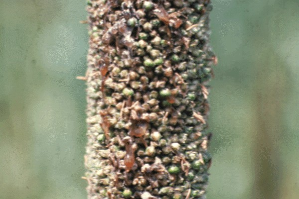
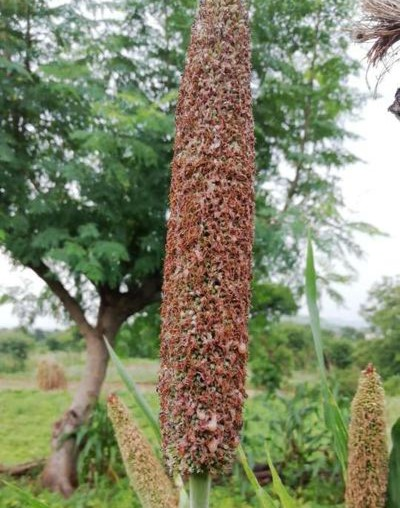
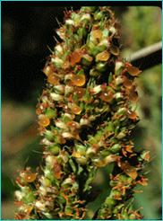

Basic Information
What is it?
A toxic fungus (Claviceps purpurea) that replaces grains with poisonous sclerotia.
Affected Crops
Rye, wheat, barley, oats, and related grasses.

Purple-black ergot bodies replacing grains
Causes & Spread
- Spread by wind-blown spores
- Thrives in cool, wet weather
- Lifecycle depends on flowering stage

Lifecycle of Claviceps purpurea
Symptoms
1 Early Stage

Honeydew secretion on flowers
Honeydew secretion on flowers
2 Mid Stage
Purple-black sclerotia development
3 Late Stage
Hardened ergot bodies replace grains
Dangers
Human Health
Ergotism (gangrene, convulsions, hallucinations)
Livestock
Reduced fertility, gangrene, death
Economic
Crop rejection >0.05% contamination
Prevention
Cultural
Crop rotation, deep plowing
Chemical
Fungicides during flowering
Mechanical
Grain cleaning & sorting